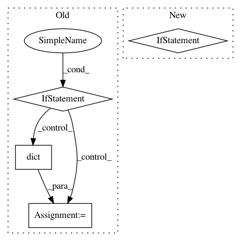

3c956a6c512724ca3f75062ffcae40dfc0568427,skopt/optimizer/optimizer.py,Optimizer,__init__,#Optimizer#,156
Before Change
self._initial_samples = None
self._initial_point_generator = initial_point_generator
if init_point_gen_kwargs is None:
init_point_gen_kwargs = dict()
self.init_point_gen_kwargs = init_point_gen_kwargs
if initial_point_generator != "random" and \
isinstance(initial_point_generator, str):
if initial_point_generator == "sobol":
After Change
self._initial_point_generator = cook_initial_point_generator(
initial_point_generator)
if self._initial_point_generator is not None:
transformer = self.space.get_transformer()
self._initial_samples = self._initial_point_generator.generate(
self.space.dimensions, n_initial_points,
random_state=self.rng.randint(0, np.iinfo(np.int32).max))
self.space.set_transformer(transformer)
// record categorical and non-categorical indices
self._cat_inds = []
self._non_cat_inds = []
for ind, dim in enumerate(self.space.dimensions):
if isinstance(dim, Categorical):
In pattern: SUPERPATTERN
Frequency: 3
Non-data size: 4
Instances
Project Name: scikit-optimize/scikit-optimize
Commit Name: 3c956a6c512724ca3f75062ffcae40dfc0568427
Time: 2020-02-20
Author: holgernahrstaedt@gmx.de
File Name: skopt/optimizer/optimizer.py
Class Name: Optimizer
Method Name: __init__
Project Name: astroML/astroML
Commit Name: a1292078d2016dff4228fff869430ab4ace79b6b
Time: 2019-01-04
Author: bsipocz@gmail.com
File Name: astroML/datasets/sdss_corrected_spectra.py
Class Name:
Method Name: fetch_sdss_corrected_spectra
Project Name: scikit-optimize/scikit-optimize
Commit Name: 24b57d44d27fc6a9a9c4dff4cac5c7c7d8025e67
Time: 2020-02-20
Author: holgernahrstaedt@gmx.de
File Name: skopt/optimizer/optimizer.py
Class Name: Optimizer
Method Name: __init__